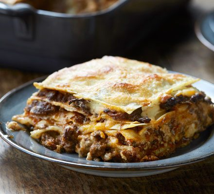

Lasagne

Rustic homemade Lasagne
A truly italian receipe made just like nonna used to, this recipe will have your friends comming back for more
Ingredients
- 500g Minced Beef
- 100g Bacon diced finely
- 1 Large Carrot
- 1 Large Onion
- 3 Celery stalks
- 3 Cloves of Garlic
- 1 Tin of Whole Plum Tomatoes
- 3tbsp of Tomato Paste
- 250ml of your favourite Red Wine
- 250ml of Beef Stock
- 150gm of Flour
- 50gm Butter
- 100m Olive Oil
- Bunch of Oregano, Thyme and Rosemary
- 2tsp of Nutmeg
- 250gm Parmesan
- Salt and Pepper to taste
Method
- Dice Carrot, Onion and Celery
- Add olive oil to Pot ona medium heat
- Add Carrot, Onion and Celery and cook until almost translucent
- Add Garlic and stir for another 3 minutes
- Add Bacon and stir for another 3 minutes
- Add mince and stir until just starting to brown
- Add Red Wine and stir occasionally until reduced
- Add Beef Stock
- Add Tomato Paste
- Add Tin of Tomatoes
- Let Simmer on Medium to Low heat for 3 hours